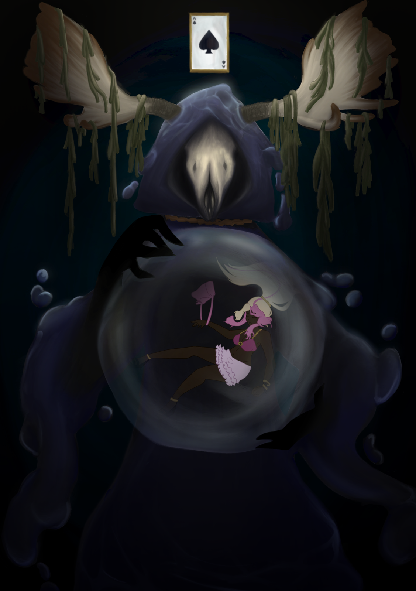
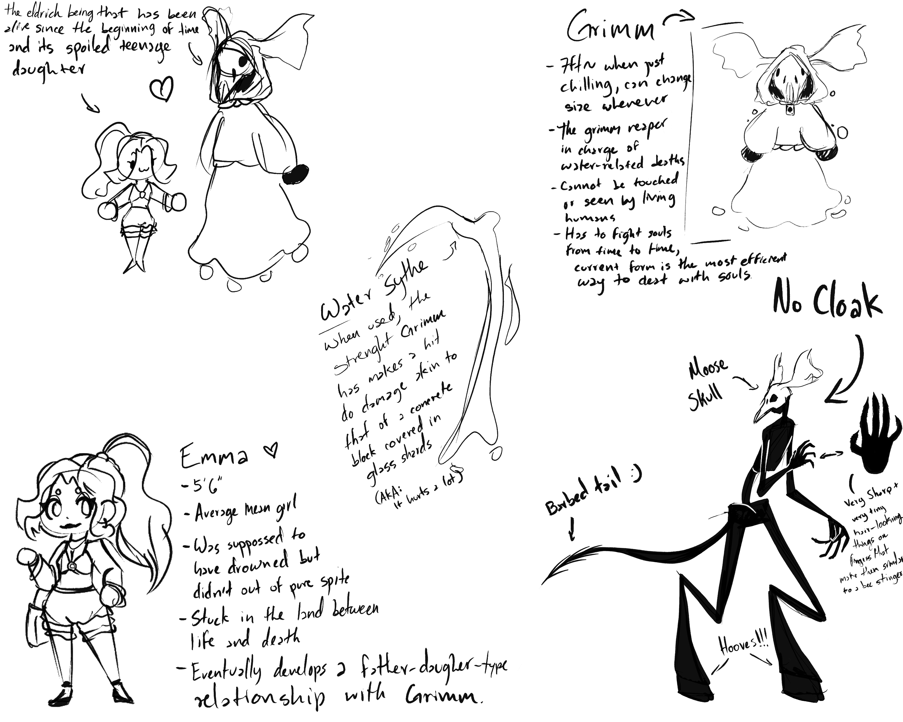
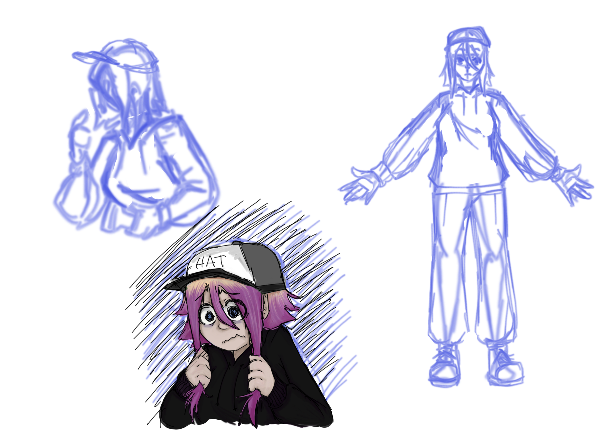
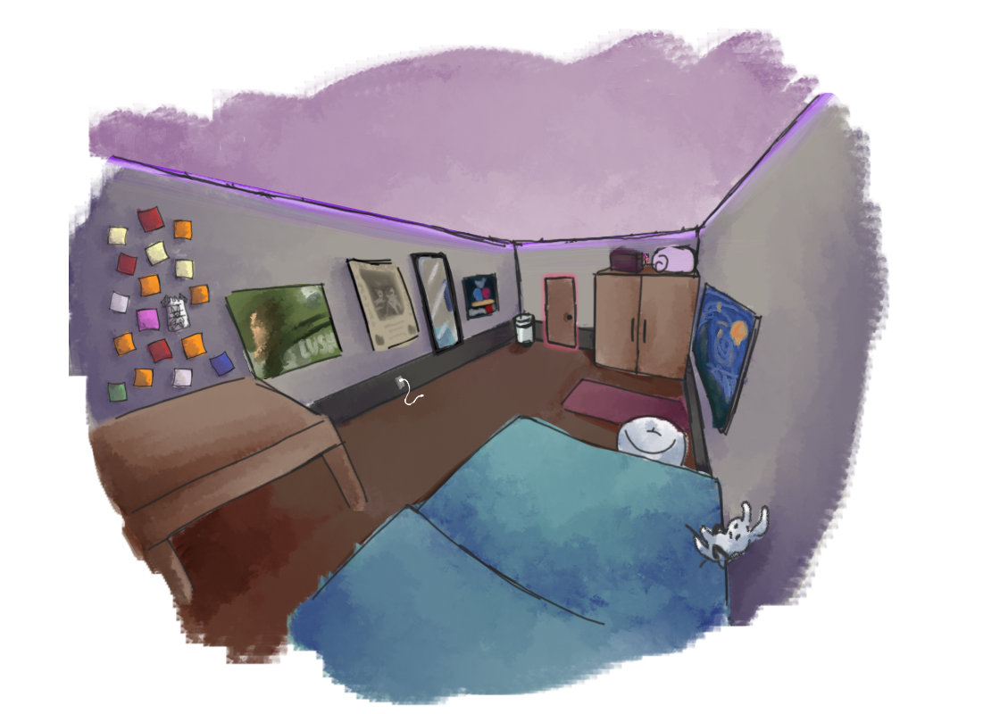
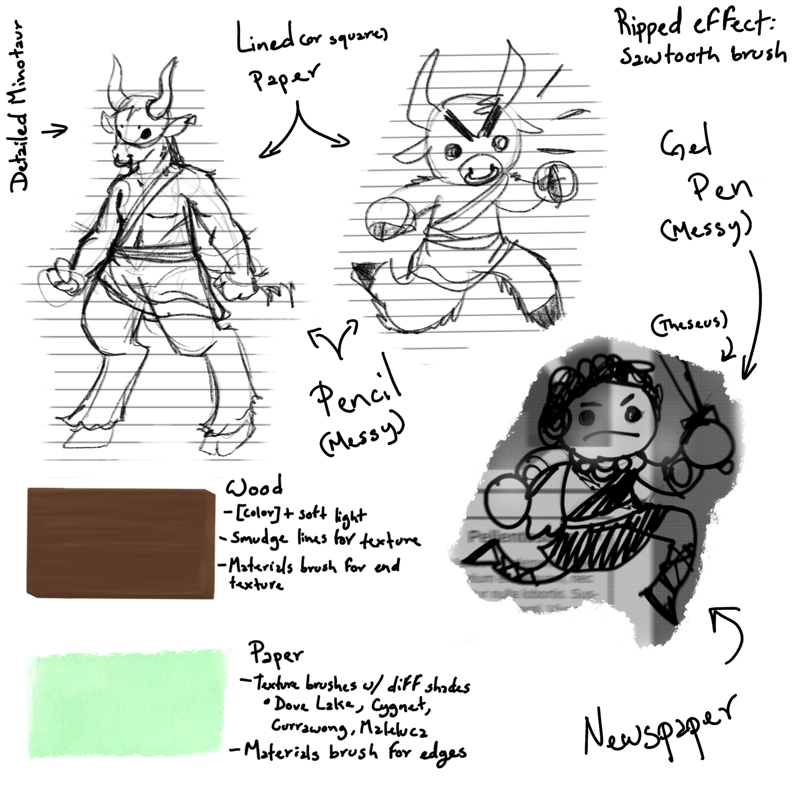

One of my favorite character design projects was creating Grimm.
The only instructions I received for this project were to create an original character with a story, so I came up with the idea of a grim reaper-type of character but focused more on water-related deaths.
Every aspect of Grimm's design was carefully selected to add to his relation to water and the commonly established themes and ideas of the grim reaper as a concept. I chose to make the cloak imitate the look of a dark ocean, with the cloak itself moving like a liquid. As for the sythe, the most common weapon associated with the grim reaper, I decided to make it out of water as well. I figured making it water directly not only connects the character to it further, but it can also show the danger of water and how it can be as dangerough as a blade with enough pressure. For the character's face, I chose a moose skull; moose are known for being good swimmers, being able to hold their breath for up to a minute and being able so submerge themselves up to 20 feet underwater. I thought using a big and misterious animal that still has a connection to water would be a good detail, while still keeping the "skeleton" look of the popular grim reaper. I added other small details, like an ace of spades playing card and a rope around their neck- more symbols commonly associated with death, seaweed on the skull's antlers, making the body pitch black (to add to the mysterious atmosphere around the character), and bubbles.


Lastly, I added an additional character- your average teenage girl- to show the Grimm's more calm demeanor; contrary to the expected aggressive attitude one could expect from a character like this.
Emma's design is meant to contrast Grimm's, using more vibrant colors and being based on popularly "mean girl" looks- Karen from Mean Girls, 2004 being a main inspiration.
As part of a group project where we had to create an interactive comic, I created the concept for our main character, Alli, and her environment.
When tasked with designing the main character, I thought about the story that was provided by my team based on our prompt. The story called for a mentally unstable college student that has an undisclosed mental illness. The comic tries to talk about the dilemma of whether the universe is random or a simulation. The idea is that the reader has to draw their own conclusions about the main character and whether she actually is mentally ill or if the world around her is making her seem that way. With this in mind, I created a character that has a very low-effort look and someone that is visibly struggling with their day-to-day life.


For her environment, I wanted to stick with the ideas I had for her own design. I stayed with a relatively simple look but added some details and references that hint at her personality.
Some of these details are the posters on the walls that depict some music artists that are known for making relatively sad/melancholic music. Another small detail can be her desk and the scattered sticky notes on the wall, which are meant to show her lack of organization and "scattered" brain.
While working on a group AR platformer, my team and I decided to make the whole look of the game be inspired by a child's unpolished drawings- almost like a kid was playing with paper dolls and cutouts. We also chose to base the story loosely on the greek myth of Theseus and the Minotaur.
Due to these decsions, I created two very simplistic designs for the main characters, making them have a white outline that mimicked that of ripped notebook paper and using textures that looked like crayons and colored pencils. These characters ended up having simple in-game animations and some less polished end-game animations.
I also worked on some of the environment textures for this project, coming up with ideas of where they little "game" would take place in, I eded up creating wood and paper textures that were used for the background and some of the environment.
